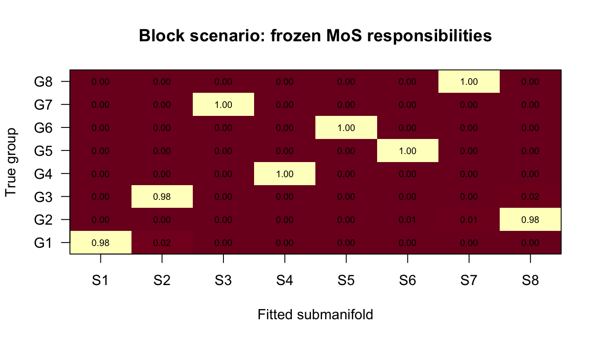
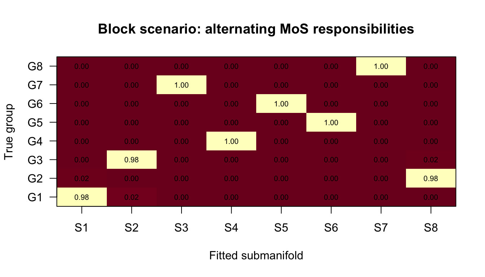
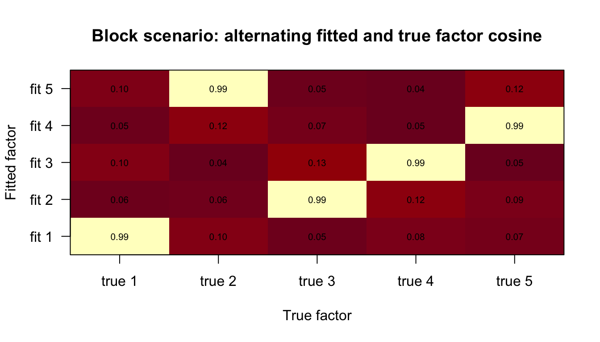
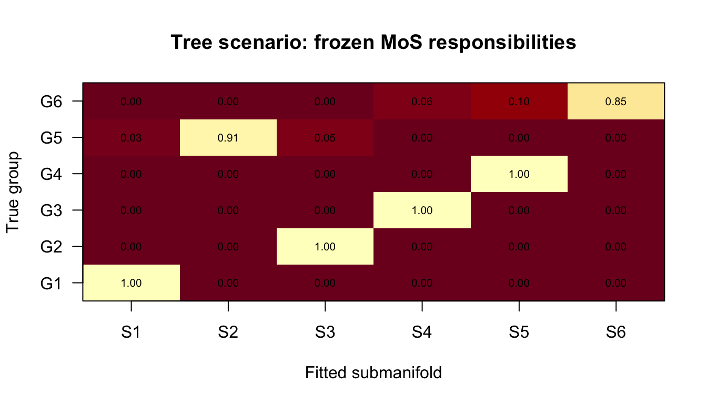
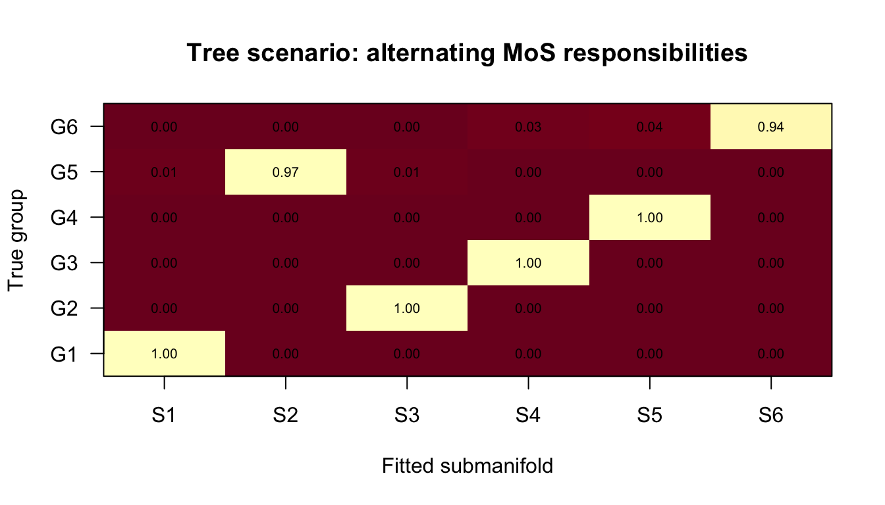
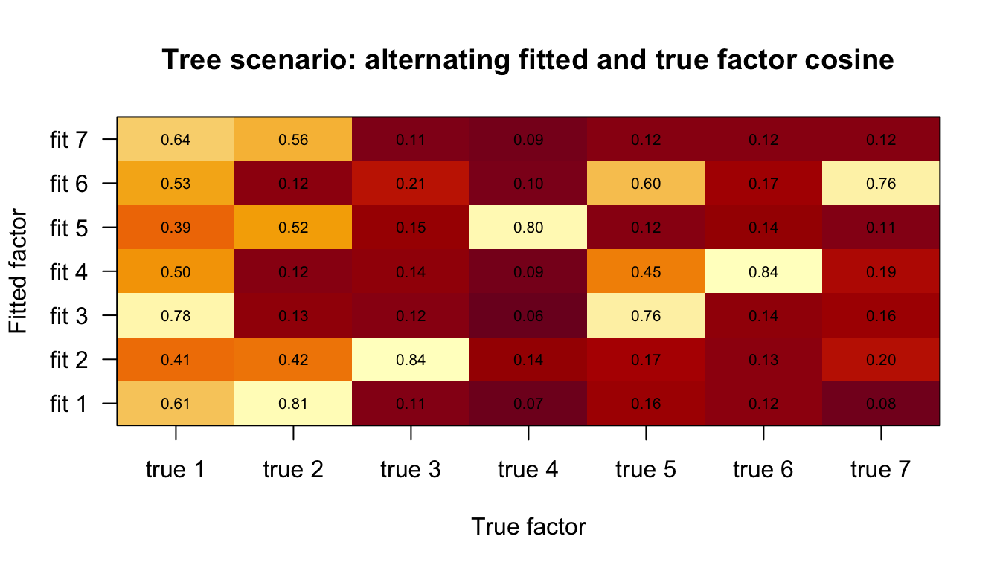

Last updated: 2026-07-26
Checks: 6 1
Knit directory: mos-nmf-experiments/
This reproducible R Markdown analysis was created with workflowr (version 1.7.2). The Checks tab describes the reproducibility checks that were applied when the results were created. The Past versions tab lists the development history.
The R Markdown is untracked by Git. To know which version of the R
Markdown file created these results, you’ll want to first commit it to
the Git repo. If you’re still working on the analysis, you can ignore
this warning. When you’re finished, you can run
wflow_publish to commit the R Markdown file and build the
HTML.
Great job! The global environment was empty. Objects defined in the global environment can affect the analysis in your R Markdown file in unknown ways. For reproduciblity it’s best to always run the code in an empty environment.
The command set.seed(20260624) was run prior to running
the code in the R Markdown file. Setting a seed ensures that any results
that rely on randomness, e.g. subsampling or permutations, are
reproducible.
Great job! Recording the operating system, R version, and package versions is critical for reproducibility.
Nice! There were no cached chunks for this analysis, so you can be confident that you successfully produced the results during this run.
Great job! Using relative paths to the files within your workflowr project makes it easier to run your code on other machines.
Great! You are using Git for version control. Tracking code development and connecting the code version to the results is critical for reproducibility.
The results in this page were generated with repository version f889e0d. See the Past versions tab to see a history of the changes made to the R Markdown and HTML files.
Note that you need to be careful to ensure that all relevant files for
the analysis have been committed to Git prior to generating the results
(you can use wflow_publish or
wflow_git_commit). workflowr only checks the R Markdown
file, but you know if there are other scripts or data files that it
depends on. Below is the status of the Git repository when the results
were generated:
Ignored files:
Ignored: .DS_Store
Ignored: .RData
Ignored: .Rhistory
Ignored: .Rproj.user/
Ignored: analysis/figure/
Untracked files:
Untracked: analysis/miso-poi-susie-alternating.Rmd
Untracked: analysis/miso-poi-susie-scenarios.Rmd
Untracked: analysis/overspecify-D-mf-poi-susie.Rmd
Untracked: analysis/overspecify-K-mf-poi-susie.Rmd
Untracked: analysis/tree-scenario.Rmd
Untracked: code/miso-poi-susie.R
Untracked: tex/model-ideas.aux
Untracked: tex/model-ideas.bbl
Untracked: tex/model-ideas.blg
Untracked: tex/model-ideas.brf
Untracked: tex/model-ideas.log
Untracked: tex/model-ideas.out
Untracked: tex/model-ideas.pdf
Untracked: tex/model-ideas.synctex.gz
Untracked: tex/model-ideas.tex
Untracked: tex/sparsity.bib
Unstaged changes:
Modified: analysis/index.Rmd
Modified: analysis/joint-learn-susie-poi-F.Rmd
Modified: code/joint-learn-susie-poi-F.R
Modified: tex/mf-poi-susie.aux
Modified: tex/mf-poi-susie.log
Modified: tex/mf-poi-susie.pdf
Deleted: tex/mf-poi-susie.synctex.gz
Modified: tex/mf-poi-susie.tex
Note that any generated files, e.g. HTML, png, CSS, etc., are not included in this status report because it is ok for generated content to have uncommitted changes.
There are no past versions. Publish this analysis with
wflow_publish() to start tracking its development.
This file tests the alternating hard-motif MiSo-Poisson-SuSiE update.
Both comparisons use the same MF-Poisson-SuSiE initialization. The
frozen fit keeps the initialized F and motifs fixed; the
alternating fit updates both F and hard motifs inside the
MiSo loop.
source("code/miso-poi-susie.R")row_cosine = function(A, B) {
A_norm = sqrt(rowSums(A^2))
B_norm = sqrt(rowSums(B^2))
(A %*% t(B)) / (A_norm %o% B_norm)
}
all_permutations = function(x) {
if (length(x) == 1) return(matrix(x, nrow = 1))
do.call(rbind, lapply(seq_along(x), function(i) {
cbind(x[i], all_permutations(x[-i]))
}))
}
match_factor_rows = function(F_hat, F_true) {
K = nrow(F_true)
similarity = row_cosine(F_hat, F_true)
perms = all_permutations(seq_len(K))
scores = apply(perms, 1, function(p) {
sum(similarity[cbind(seq_len(K), p)])
})
learned_to_true = perms[which.max(scores), ]
list(
table = data.frame(
learned_factor = seq_len(K),
matched_true_factor = learned_to_true,
cosine = similarity[cbind(seq_len(K), learned_to_true)]
),
learned_to_true = learned_to_true,
similarity = similarity
)
}
support_label = function(support) paste(sort(unique(support)), collapse = ",")
simulate_support_scenario = function(N, M, K, group_supports, shape_vec,
factor_shape = 0.1,
factor_rate = 0.01, seed = 1) {
set.seed(seed)
S = length(group_supports)
n_per_group = N / S
grp = rep(seq_len(S), each = n_per_group)
F0 = matrix(rgamma(M * K, shape = factor_shape, rate = factor_rate),
nrow = K, ncol = M)
F0 = normalize_rows(F0)
L = matrix(0, nrow = N, ncol = K)
for (s in seq_len(S)) {
idx = which(grp == s)
support = group_supports[[s]]
L[idx, support] = matrix(
rgamma(length(idx) * length(support), shape = shape_vec[s], rate = 1),
nrow = length(idx),
ncol = length(support)
)
}
Y = matrix(rpois(N * M, L %*% F0), nrow = N, ncol = M)
list(
Y = Y,
F0 = F0,
L = L,
grp = grp,
group_supports = group_supports,
true_patterns = vapply(group_supports, support_label, character(1))
)
}
translate_motifs_to_true_space = function(motifs, learned_to_true) {
matrix(learned_to_true[motifs], nrow = nrow(motifs), ncol = ncol(motifs))
}
fit_frozen_and_alternating = function(dat, K, S, D, init_seed,
mf_max_iters = 50,
mf_nmf_iters = 80,
miso_max_iters = 25,
n_inner = 5) {
mf_fit = mf_poi_susie(
Y = dat$Y,
K = K,
D = D,
max_iters = mf_max_iters,
update_prior = TRUE,
init_seed = init_seed,
init_F = "poisson_nmf",
nmf_iters = mf_nmf_iters,
init_gamma_from_nmf = TRUE,
elbo_every = 5,
tol = 5e-4,
min_iters = 15,
patience = 2
)
motif_init = init_motifs_from_loading_scores(
loading_scores_from_mf(mf_fit),
S = S,
D = D,
init_seed = init_seed
)
frozen = miso_poi_susie_fixed_motifs(
Y = dat$Y,
F = mf_fit$F,
motifs = motif_init$motifs,
max_iters = miso_max_iters,
n_inner = n_inner,
update_prior = TRUE,
update_F = FALSE,
update_motifs = FALSE,
tol = 1e-5,
min_iters = 5,
patience = 2
)
alternating = miso_poi_susie_fixed_motifs(
Y = dat$Y,
F = mf_fit$F,
motifs = motif_init$motifs,
max_iters = miso_max_iters,
n_inner = n_inner,
update_prior = TRUE,
update_F = TRUE,
update_motifs = TRUE,
motif_update_every = 1,
F_step_init = 0.2,
F_step_ramp = 15,
tol = 1e-5,
min_iters = 5,
patience = 2
)
list(mf_fit = mf_fit, motif_init = motif_init, frozen = frozen,
alternating = alternating)
}
summarize_one_fit = function(name, fit, z_true, F0, motif_init) {
factor_match = match_factor_rows(fit$F, F0)
data.frame(
fit = name,
converged = fit$converged,
n_iter = fit$n_iter,
final_elbo = tail(fit$elbo[!is.na(fit$elbo)], 1),
cluster_accuracy = cluster_accuracy(fit$z_hat, z_true),
mean_max_responsibility = mean(apply(fit$omega, 1, max)),
mean_factor_cosine = mean(factor_match$table$cosine),
min_factor_cosine = min(factor_match$table$cosine),
motif_slot_changes = sum(fit$motifs != motif_init$motifs)
)
}
summarize_pair = function(pair, dat) {
rbind(
summarize_one_fit("frozen", pair$frozen, dat$grp, dat$F0,
pair$motif_init),
summarize_one_fit("alternating", pair$alternating, dat$grp, dat$F0,
pair$motif_init)
)
}
motif_table = function(fit, F0, label) {
factor_match = match_factor_rows(fit$F, F0)
motifs_true = translate_motifs_to_true_space(fit$motifs,
factor_match$learned_to_true)
data.frame(
fit = label,
fitted_submanifold = seq_len(nrow(fit$motifs)),
motif_in_fitted_factor_space = apply(fit$motifs, 1, support_label),
motif_mapped_to_true_factor_space = apply(motifs_true, 1, support_label)
)
}
plot_group_responsibilities = function(omega, grp, main) {
group_resp = do.call(rbind, lapply(sort(unique(grp)), function(g) {
colMeans(omega[grp == g, , drop = FALSE])
}))
image(x = seq_len(ncol(group_resp)), y = seq_len(nrow(group_resp)),
z = t(group_resp), axes = FALSE, xlab = "Fitted submanifold",
ylab = "True group", main = main, col = hcl.colors(100, "YlOrRd"))
axis(1, at = seq_len(ncol(group_resp)),
labels = paste0("S", seq_len(ncol(group_resp))))
axis(2, at = seq_len(nrow(group_resp)),
labels = paste0("G", seq_len(nrow(group_resp))), las = 1)
for (g in seq_len(nrow(group_resp))) {
for (s in seq_len(ncol(group_resp))) {
text(s, g, sprintf("%.2f", group_resp[g, s]), cex = 0.65)
}
}
box()
}
plot_cosine_heatmap = function(similarity, main) {
image(x = seq_len(ncol(similarity)), y = seq_len(nrow(similarity)),
z = t(similarity), axes = FALSE, xlab = "True factor",
ylab = "Fitted factor", main = main, col = hcl.colors(100, "YlOrRd"))
axis(1, at = seq_len(ncol(similarity)),
labels = paste0("true ", seq_len(ncol(similarity))))
axis(2, at = seq_len(nrow(similarity)),
labels = paste0("fit ", seq_len(nrow(similarity))), las = 1)
for (i in seq_len(nrow(similarity))) {
for (j in seq_len(ncol(similarity))) {
text(j, i, sprintf("%.2f", similarity[i, j]), cex = 0.65)
}
}
box()
}block_supports = list(
c(1),
c(2),
c(3),
c(4),
c(5),
c(1, 2, 3),
c(1, 2, 4),
c(2, 3, 5)
)
block = simulate_support_scenario(
N = 480,
M = 500,
K = 5,
group_supports = block_supports,
shape_vec = c(rep(10, 5), rep(20, 3)),
seed = 42
)
data.frame(group = seq_along(block_supports),
true_active_factors = block$true_patterns) group true_active_factors
1 1 1
2 2 2
3 3 3
4 4 4
5 5 5
6 6 1,2,3
7 7 1,2,4
8 8 2,3,5block_pair = fit_frozen_and_alternating(
dat = block,
K = 5,
S = length(block_supports),
D = 3,
init_seed = 1,
mf_max_iters = 50,
mf_nmf_iters = 80,
miso_max_iters = 25,
n_inner = 5
)
summarize_pair(block_pair, block) fit converged n_iter final_elbo cluster_accuracy
1 frozen TRUE 22 -31543.59 0.99375
2 alternating FALSE 25 -31305.95 0.99375
mean_max_responsibility mean_factor_cosine min_factor_cosine
1 0.9970373 0.9872526 0.9829392
2 0.9978489 0.9895437 0.9867279
motif_slot_changes
1 0
2 2rbind(
motif_table(block_pair$frozen, block$F0, "frozen"),
motif_table(block_pair$alternating, block$F0, "alternating")
) fit fitted_submanifold motif_in_fitted_factor_space
1 frozen 1 1
2 frozen 2 2
3 frozen 3 1,3,5
4 frozen 4 3
5 frozen 5 1,2,5
6 frozen 6 4
7 frozen 7 2,4,5
8 frozen 8 5
9 alternating 1 1
10 alternating 2 2
11 alternating 3 1,3,5
12 alternating 4 3
13 alternating 5 1,2,5
14 alternating 6 4
15 alternating 7 2,4,5
16 alternating 8 5
motif_mapped_to_true_factor_space
1 1
2 3
3 1,2,4
4 4
5 1,2,3
6 5
7 2,3,5
8 2
9 1
10 3
11 1,2,4
12 4
13 1,2,3
14 5
15 2,3,5
16 2plot_group_responsibilities(
block_pair$frozen$omega,
block$grp,
"Block scenario: frozen MiSo responsibilities"
)
plot_group_responsibilities(
block_pair$alternating$omega,
block$grp,
"Block scenario: alternating MiSo responsibilities"
)
plot_cosine_heatmap(
match_factor_rows(block_pair$alternating$F, block$F0)$similarity,
"Block scenario: alternating fitted and true factor cosine"
)
tree_supports = list(
c(1, 2, 3),
c(1, 2, 4),
c(1, 5, 6),
c(1, 5, 7),
c(1, 2),
c(1, 5)
)
tree = simulate_support_scenario(
N = 480,
M = 600,
K = 7,
group_supports = tree_supports,
shape_vec = rep(18, length(tree_supports)),
seed = 47
)
data.frame(group = seq_along(tree_supports),
true_active_factors = tree$true_patterns) group true_active_factors
1 1 1,2,3
2 2 1,2,4
3 3 1,5,6
4 4 1,5,7
5 5 1,2
6 6 1,5tree_pair = fit_frozen_and_alternating(
dat = tree,
K = 7,
S = length(tree_supports),
D = 3,
init_seed = 2,
mf_max_iters = 60,
mf_nmf_iters = 100,
miso_max_iters = 25,
n_inner = 5
)
summarize_pair(tree_pair, tree) fit converged n_iter final_elbo cluster_accuracy
1 frozen TRUE 15 -56948.60 0.9604167
2 alternating FALSE 25 -55524.37 0.9854167
mean_max_responsibility mean_factor_cosine min_factor_cosine
1 0.9944863 0.7610769 0.6860098
2 0.9999794 0.7784802 0.6424907
motif_slot_changes
1 0
2 1rbind(
motif_table(tree_pair$frozen, tree$F0, "frozen"),
motif_table(tree_pair$alternating, tree$F0, "alternating")
) fit fitted_submanifold motif_in_fitted_factor_space
1 frozen 1 1,2,7
2 frozen 2 1,7
3 frozen 3 5,7
4 frozen 4 3,4
5 frozen 5 3,6
6 frozen 6 3
7 alternating 1 1,2,7
8 alternating 2 1,7
9 alternating 3 1,5,7
10 alternating 4 3,4
11 alternating 5 3,6
12 alternating 6 3
motif_mapped_to_true_factor_space
1 1,2,3
2 1,2
3 1,4
4 5,6
5 5,7
6 5
7 1,2,3
8 1,2
9 1,2,4
10 5,6
11 5,7
12 5plot_group_responsibilities(
tree_pair$frozen$omega,
tree$grp,
"Tree scenario: frozen MiSo responsibilities"
)
plot_group_responsibilities(
tree_pair$alternating$omega,
tree$grp,
"Tree scenario: alternating MiSo responsibilities"
)
plot_cosine_heatmap(
match_factor_rows(tree_pair$alternating$F, tree$F0)$similarity,
"Tree scenario: alternating fitted and true factor cosine"
)
This is still a hard-motif coordinate method. A useful result here is
not that the ELBO is perfectly monotone, but that updating
F and motifs from a good MF initialization improves or
preserves clustering and gives more coherent submanifold motifs. If
alternating hard motifs starts to reinforce a bad initialization, the
next step is the soft submanifold motif posterior from the full
model.
sessionInfo()R version 4.5.2 (2025-10-31)
Platform: aarch64-apple-darwin20
Running under: macOS Tahoe 26.5.1
Matrix products: default
BLAS: /System/Library/Frameworks/Accelerate.framework/Versions/A/Frameworks/vecLib.framework/Versions/A/libBLAS.dylib
LAPACK: /Library/Frameworks/R.framework/Versions/4.5-arm64/Resources/lib/libRlapack.dylib; LAPACK version 3.12.1
locale:
[1] en_US.UTF-8/en_US.UTF-8/en_US.UTF-8/C/en_US.UTF-8/en_US.UTF-8
time zone: America/New_York
tzcode source: internal
attached base packages:
[1] stats graphics grDevices utils datasets methods base
loaded via a namespace (and not attached):
[1] vctrs_0.7.1 cli_3.6.6 knitr_1.51 rlang_1.2.0
[5] xfun_0.56 stringi_1.8.7 otel_0.2.0 promises_1.5.0
[9] jsonlite_2.0.0 workflowr_1.7.2 glue_1.8.0 rprojroot_2.1.1
[13] git2r_0.36.2 htmltools_0.5.9 httpuv_1.6.17 sass_0.4.10
[17] rmarkdown_2.30 jquerylib_0.1.4 evaluate_1.0.5 tibble_3.3.1
[21] fastmap_1.2.0 yaml_2.3.12 lifecycle_1.0.5 stringr_1.6.0
[25] compiler_4.5.2 fs_2.1.0 Rcpp_1.1.1 pkgconfig_2.0.3
[29] rstudioapi_0.18.0 later_1.4.8 digest_0.6.39 R6_2.6.1
[33] pillar_1.11.1 magrittr_2.0.4 bslib_0.10.0 tools_4.5.2
[37] cachem_1.1.0